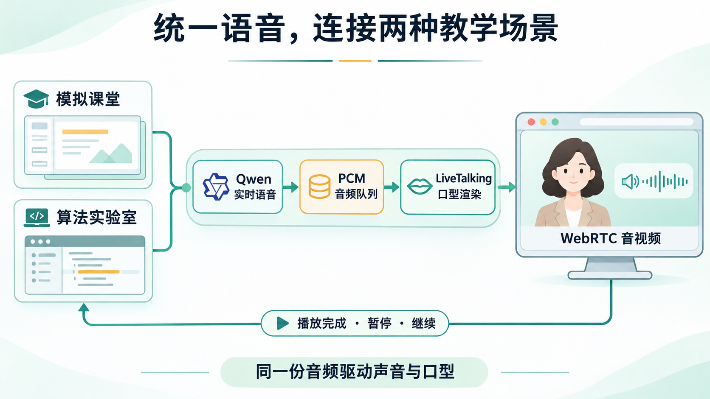

按需建立会话
进入时协商 WebRTC；退出时回收媒体连接与 GPU 会话。
在同一页切换演示，查看对应说明与关键设计。
开启数字人后建立视频连接，画面就绪再开始讲课。退出时释放数字人会话，课件仍停留在当前页。
进入时协商 WebRTC；退出时回收媒体连接与 GPU 会话。
教师画面就绪后再发起讲解，避免连接过程吞掉开场音频。
页码切换带动讲稿与音频内容切换，视频连接保持。学生可以暂停思考，再回到当前页继续学习。
讲稿和缓存音频按页组织，同页再次讲授可复用已有结果。
停止旧页播报并切换字幕锚点，防止旧页音频继续进入新画面。
先把上下标、分式、求和与转置等表达规范化为中文口播，再进行语音合成，让听到的内容对应课件公式。
公式展开独立于音色配置，切换声音不改变术语与公式读法。
规范化结果参与缓存键，内容或规则更新后避免命中旧音频。
讲稿、笔记与 Demo 可在右栏切换。课堂会话和当前页保持，让学生边听边记，不打断正在进行的讲解。
面板只切换视图，不重新建立数字人媒体会话。
讲稿、笔记与演示围绕同一物理页组织，减少跨面板定位。
学生提出问题时，课堂暂停当前讲授并保留位置；回答使用同一音色，之后回到当前页继续讲解。
打断前保留页码与句子位置，问答结束后恢复讲授上下文。
讲解与回答交给同一数字人播放链路，避免音色与画面脱节。
文字模式保留课件、讲稿与提问，适合无需教师视频的场景；开启数字人时沿用当前课件页与课堂上下文。
未开启数字人时不占用教师视频渲染所需的 GPU 会话。
视觉呈现与课件状态分开管理，切换时保留当前学习页。
同一份音频驱动声音与口型；具体内容来源由教学场景组织。

语音输出转为 PCM 后交给 LiveTalking，声音与口型使用同一音频来源。
网关负责音频转发与队列，GPU 负责教师口型，浏览器通过 WebRTC 播放。
进入、讲授、暂停与退出围绕课堂会话组织，保持课件位置与媒体生命周期一致。
课件页、音频队列与播放进度各有职责。

翻页切换讲稿和音频，废弃旧页内容；媒体连接继续复用。
由 RTP 时间戳与音频包进度校正播放位置，暂停时停止推进字幕。
在同一页切换演示，查看对应说明与关键设计。
按专题选择题目，点击完整讲解。交互图示、同步代码与数字人进入同一个学习场景，连续解释后续步骤。
题目对应具体演示状态与步骤讲稿，演示预设教学算法。
算法内容送入与课堂共用的语音网关和数字人播放链路。
推进步骤时，图示与当前代码高亮共同更新，数字人解释这一步发生的比较、交换或边界变化。
数组、边界、代码行与讲稿从同一个步骤状态映射。
完整讲解收到媒体播放完成确认后，再进入下一步。
暂停保留当前讲解进度，继续后接着播放；完整讲解仍保持连续模式，无需重新开启后续步骤。
暂停当前媒体输出，保留尚未播放的音频与当前步骤。
完整讲解模式与临时播放状态分开保存，恢复后继续推进。
结合当前代码与高亮行提出问题，数字人针对具体操作解释原因，回答仍使用同一语音播放链路。
问题请求包含当前代码、行号与学生问题，减少泛化回答。
前一响应取消或结束后再发起新回答，避免实时响应互相占用。
选择教师音色与讲解语气，课堂和算法实验室共用设置。切换音色前停止讲解，新语气用于后续回答。
音色变更重建实时语音连接，避免同一次播报中途换声。
固定步骤讲稿保留原文；问答生成使用选择的讲解语气。
同一份音频驱动声音与口型；具体内容来源由教学场景组织。
步骤讲稿与代码问答共用 Qwen 连接，PCM 进入数字人，页面只播放 WebRTC 音轨。
当前步骤提供图示状态、代码行和讲稿；学生提交代码的执行与评测仍在题目页完成。
停止或切换内容时废弃旧播报，迟到音频和旧完成回执不推动新步骤。
同步依赖共享状态与播放回执，避免用固定时长猜测进度。

图示、高亮代码和讲稿从步骤 k 映射，避免各自维护独立进度。
暂停保留当前未播音频；停止废弃旧播报，完整讲解模式独立保存。